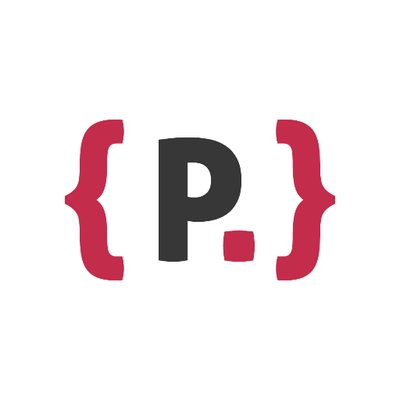

Next look at this great opportunity:
-

We Are Looking for Participants
Powercoders Bootcamp is our full-time flagship program with supported job integration. It includes 13-week intensive full-time programming course with dedicated specialisation tracks (Web Design, Advanced JavaScript, Java, Testing, DevOps, etc.) followed by a 6-12 month internship at a Swiss IT company. We will accept applications again in December 2022. You can find all the dates for the program here. Sign up here and we will send you a message when the application period opens so you can apply then.
-
Powercoders AWS RE/START (part-time)
AWS re/Start is a free, part-time skills development program to jump-start your career working in cloud computing. We offer a 6 month part-time AWS course, followed by an 6 - 12 month internship. In the course you prepare for AWS Certified Cloud Practitioner certification with free access to practice and full exams. After you graduate, we will connect you with employers and help you move into your new working life. The application period for the pilot program is over and if the pilot goes as expected, we will most likely start another AWS re/start program in 2023.
-
Company Engagement
s your company looking for talents and interested in a Corporate Social Responsibility engagement? The IT market is lacking talents and our skilled participants are looking for a chance you can help solve this challenge! Join our next Career Day (Zurich: 02.11.2022 // Lausanne: 03.11.2022) and meet our IT talents. The Career Day is the day when the companies meet the participants for speed interviews (5 minutes per participant) and decide whom they are interested in to invite for interviews the week after.
-
How You Can Get Involved
YOU SUPPORT OUR TEACHERS AS ASSISTANTS. During the bootcamp teachers are supported by volunteer trainers to help answer questions from the participants and provide 1:1 support during exercises. You can either volunteer onsite in the classroom (2+ half day commitment) or online (2h of non continuous support on participants questions about simple frontend development). Alternatively you can present online about your typical day or your IT advice (2h online on Zoom). If you are an IT professional, would like to support our participants.